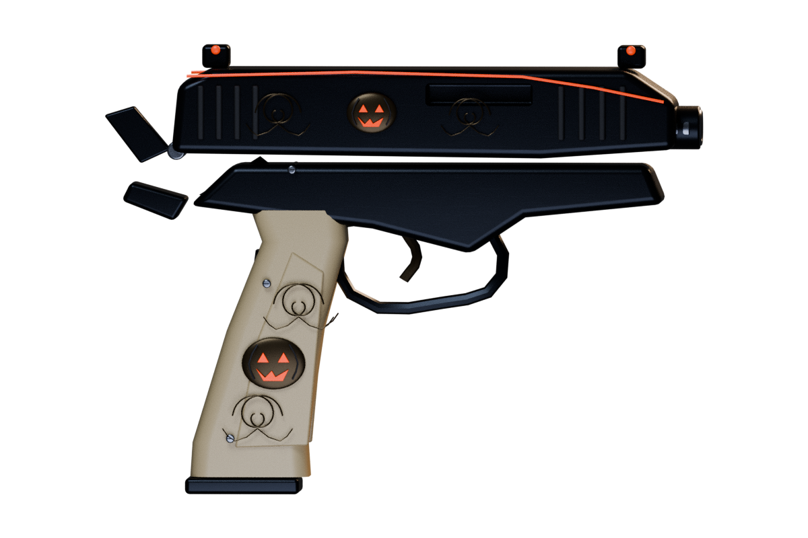
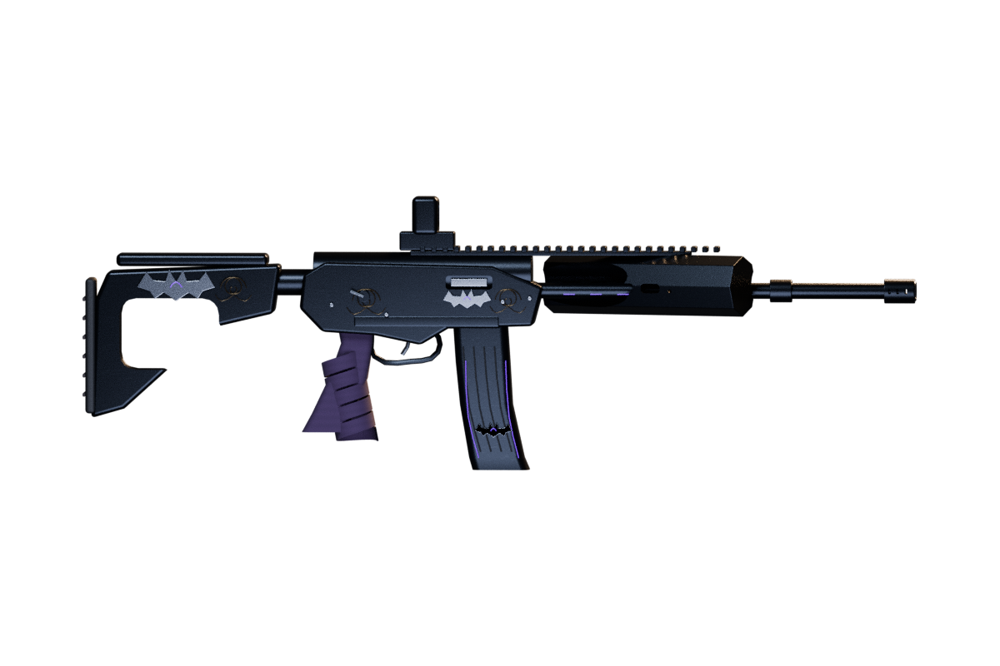
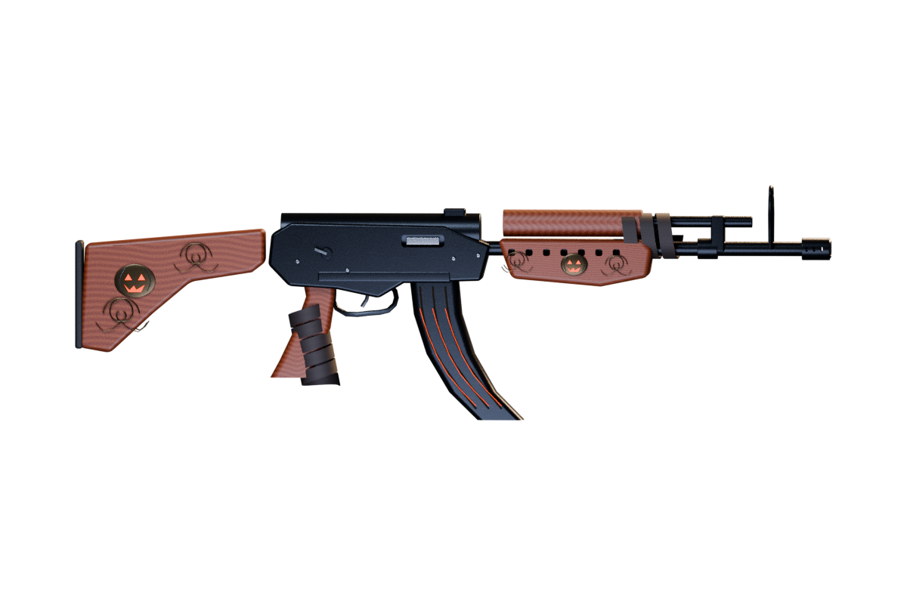
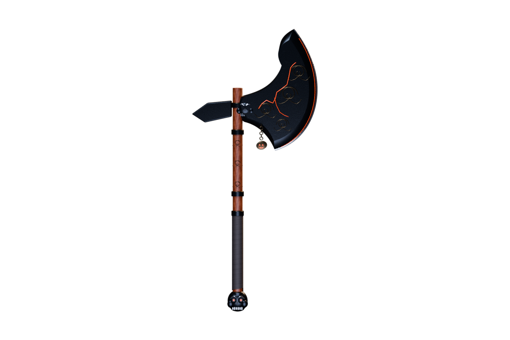
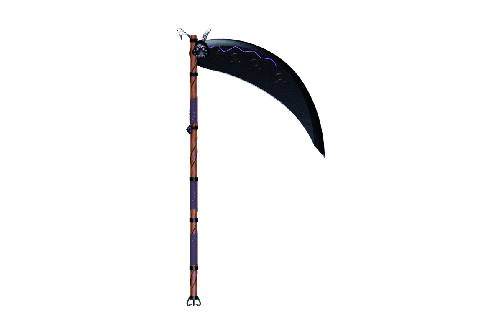
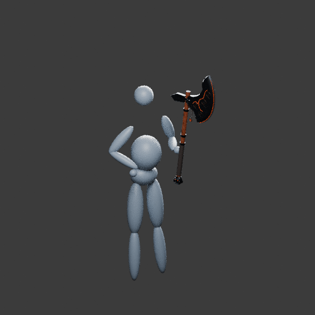
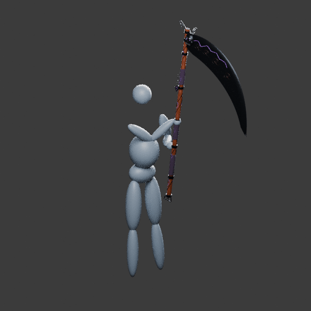
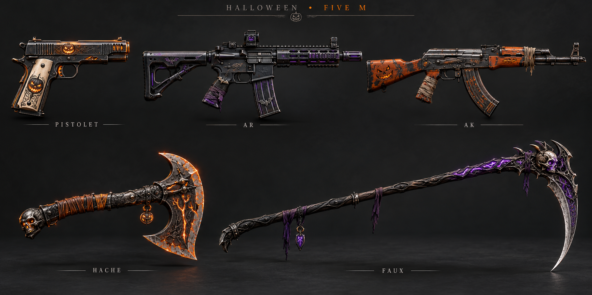

Halloween V2 · 5 armes originales
Ces rendus montrent les modèles 3D refaits, avec surfaces arrondies et matériaux séparés réellement inclus dans le pack FiveM. Ils sont accompagnés de textures, de chargeurs séparés, de leurs sources Blender/GLB et de définitions pour ox_inventory. Le rendu en jeu reste à vérifier sur un client FiveM.

Braise · PistoletWEAPON_HW_EMBER · 12 coups · ammo-9

Revenant · ARWEAPON_HW_REVENANT · 30 coups · ammo-rifle

Citrouille · AKWEAPON_HW_PUMPKIN · 30 coups · ammo-rifle2

Faucheuse · HacheWEAPON_HW_REAPER_AXE · Mêlée à une main

Âme perdue · FauxWEAPON_HW_SOUL_SCYTHE · Mêlée à deux mains
Guide d'installation · Vérifications réalisées
Animations originales — aperçu Blender
Ces GIF montrent les mouvements sur un mannequin ; ils ne sont pas des captures de FiveM.

Hache · frappe
Faux · balayage à deux mainsIllustration de concept
Référence artistique générée avant la modélisation. Les modèles livrés ci-dessus sont plus simples ; cette illustration n'est pas une capture de GTA V.
